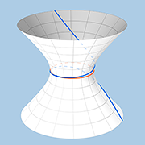
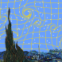
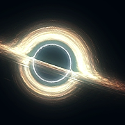
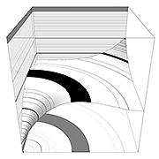

Geometry in curvilinear coordinates. Coordinate lines, basis, contravariant vector components. Scalar product, metric (Jacobian), contraction, Einstein notation. Tensors, raising and lowering indices.
Kinematics in curvilinear coordinates, velocity and acceleration. Geodesics.
*Differentiation in curvilinear coodinates, differential, covariant derivative, Christoffel symbols.

Lagrange and Euler coordinates. Material derivative.

Mass equivalence principle, kinematics on 4D manifolds. Central field, Binet equation. Schwarzschild metric. Light geodesics: solution, event horizon, photonic sphere, gravitational lensing. Material-point geodesics: solution, orbital stability, classical limit, apsidal precession.
Dynamics in curvilinear coordinates. Mechanical systems, generalized coordinates. Generalized potential, Coriolis force, vector potential, the first pair of Maxwell equations.
Least potential energy, trajectory "weight". Variation of the action, Euler–Lagrange equations. The second pair of Maxwell equations.
*Curvature action. Einstein equation, Schwarzschild metric derivation.
First integrals. Multiple time dimensions. Action derivatives.
Legendre transformation. Canonical transforms, criteria. Integral invariants, generating function. Hamilton–Jacobi equation.
Fermat principle, Schrödinger equation.
Quantization, continuity and probabilities, operators and eigenstates.
*Interpretations, Schrödinger's cat.
Hamiltonian flow, involution. Arnold–Liouville theorem, invariant tori. Resonances.
Topological obstacles to integrability, destruction of invariant tori. Ergodicity. Adiabatic invariants.

Perturbation of invariant tori. Quasi-integrability. The first KAM theorem. Isoenergetic reduction, the second KAM theorem.
Randomness as a sequential property. Pseudorandom recursive functions. Linear congruential generators. Periodicity and higher-order distribution moments. Sparce-recursion sequences, characteristic equation, prime criterion. Mersenne Twister.
*Chaos Theory connections.
Image space, random image generation, target manifold. Denoising networks, reverse diffusion, samplers. Mode collapse, stochastic samplers. Guidance.
*U-Net, non-text conditioning, ControlNet. Autoencoders, latent diffusion. LoRA.
Semantic space. Embeddings. Recommendation algorithm. Multi-head attention.